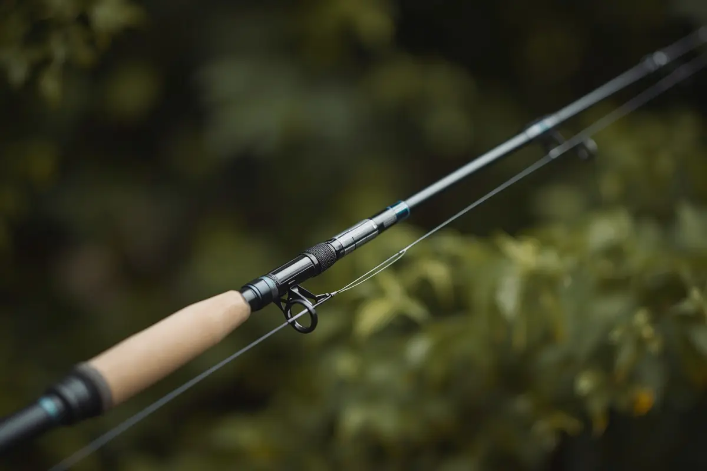
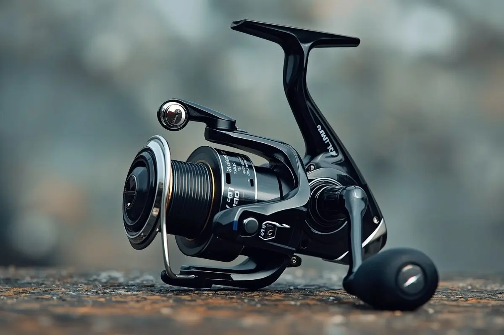
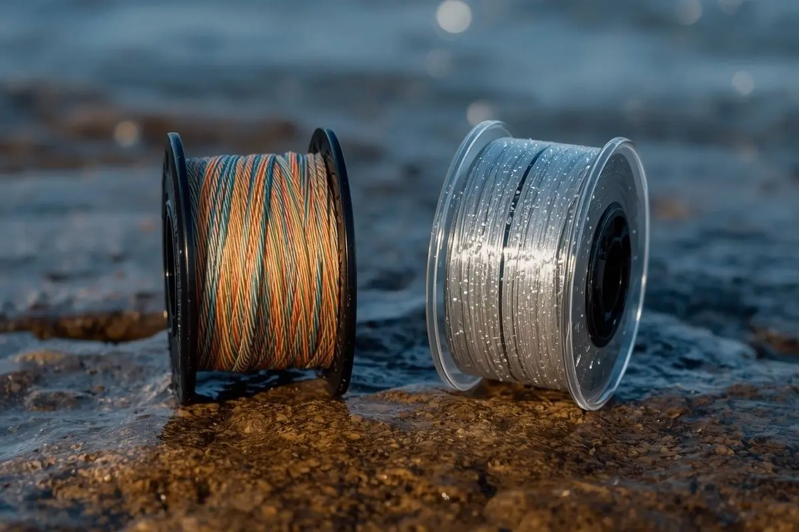
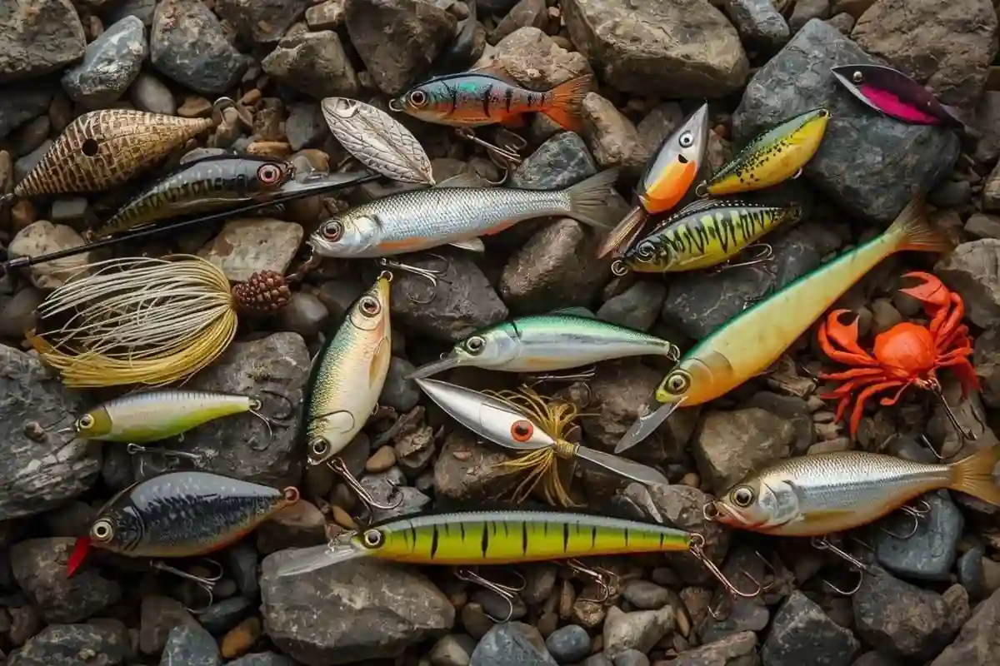
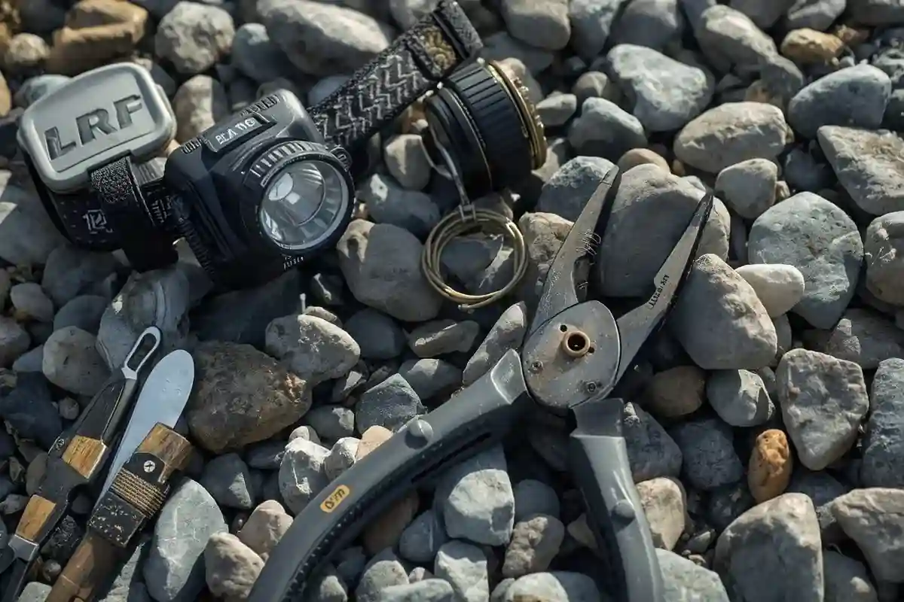

LRF Malzeme Rehberi
Doğru ekipman, başarılı bir balıkçılığın temelidir. Her malzemeyi yakından tanı, bilinçli seçim yap.
Hangi Malzemelere İhtiyacın Var?
LRF seti beş temel bileşenden oluşur: kamış, makine, misina, sahteler ve ekipmanlar. Doğru kombinasyon, hem keyifli hem de verimli bir balıkçılık deneyimi sağlar. Aşağıda her malzemeyi detaylıca inceliyoruz.
LRF Ekipman ve Malzeme İncelemeleri

LRF Kamışı
LRF kamışları, gramlık yemleri uzağa atmak ve en küçük balıkların bile vuruş titreşimlerini parmak uçlarınızda hissetmek için özel olarak tasarlanmıştır. Genellikle 1.80 - 2.40 metre uzunluğunda; Solid (Dolgu) veya Tubular (Boş) uç olmak üzere ikiye ayrılır. Silikon yemlere doğal aksiyon vermek için esnek Solid uç tercih edilirken; maket balıklara, su üstü sahtelere ve mikro jiglere sert aksiyonlar (Twitch/Jerk) vermek için Tubular uç tercih edilmelidir.
- Başlangıç için 1-8 gr veya 1-10 gr atar aralığına sahip bir kamış en ideal seçimdir.
- Fast aksiyon, sahte kontrolünü ve vuruş hissiyatını artırır.
- Daha hafif kamış, daha fazla zevk demektir, ağır kamışlardan kaçının.

LRF Makinesi
LRF makinesi, hafif takımın kalbidir. İnce örgü iplerin altına dolgu (backing) yaparak makinenin ağırlık merkezini ve sarım dengesini bozmamak için Sığ Kafa (Shallow Spool) modeller tercih edilmelidir. 500 - 2500 numara aralığındaki hafif gövdeli makineler idealdir; mikro düzeyde ayarlanabilen pürüzsüz bir kalama sistemi ise ince ipleri koparmadan iri avlarla mücadele etmenizi sağlar.
- 1000 veya 2000 numara makineler, çoğu LRF senaryosu için en ideal dengeyi sunar.
- Kalama sistemi ani balık vuruşlarında takılmadan, yumuşak ve hassas çalışmalıdır.
- Hafif bir makine kamışla kusursuz denge kurarak uzun avlarda bilek yorgunluğunu önler.

Misina Seçimi
Misina seçimi, sahte hissini ve atış mesafesini doğrudan etkiler. LRF avcılığında temel olarak iki ana seçenek öne çıkar: yüksek hassasiyetli PE örgü ip (braid) ve esnek yapılı monofilament. Her iki seçeneğin de meraya ve kullanıcı tecrübesine göre avantajları vardır.
- PE örgü ip, sıfır esneme payı sayesinde en hafif vuruşları bile anında iletir ve maksimum erim mesafesi sağlar.
- PE ipin ucuna mutlaka florokarbon şok lider ekleyin; hem su altında görünmezlik sağlar hem de kayalık ve midyelik zeminlerde ipin kesilmesini önler.
- Yeni başlayanlar için monofilament daha affedicidir. Kuş gözü ve düğüm riski bulunmaz.

LRF Sahteleri
Suni yemler, LRF avcılığının en keyifli ve yaratıcı parçasıdır. Esnek silikon yemler, parlayan metal jig'ler, gramlık sert maket balıklar (minnow/crank) ve su üstü sahteleri; farklı hava, akıntı ve su koşullarında bambaşka sonuçlar verir. Doğru renk ve boyut seçimi avın verimini doğrudan belirler.
- 1-3 gr jig head + 4-5 cm (1.5-2 inç) silikon yem kombinasyonu, neredeyse her merada iş yapan en çok yönlü başlangıçtır.
- Gündüz ve berrak sularda doğal ve şeffaf renkler; bulanık suda veya gece avlarında ise UV ve Glow (fosforlu) tonlar tercih edilmelidir.
- Balıkların o anki avlanma iştahına göre farklı renk, koku ve ağırlıkları denemekten çekinmeyin.

LRF Ekipmanları
Küçük dokunuşlar, büyük balıkları kıyıya hasarsız almanızı sağlar. Doğru yardımcı ekipmanlar; av esnasında hızınızı, güvenliğinizi ve konforunuzu en üst düzeye çıkarır. Ergonomik bel çantası, kafa lambası, ince uçlu pense, tırtıklı ip makası, balıkçı maşası, iğne çıkarıcı, bölmeli jig head ve sahte kutuları ile katlanabilir kepçe temel seti oluşturur.
- Katlanabilir kepçe, iri balıkları kıyıya hasarsız ve güvenle çıkarmanızı sağlar.
- Lip grip ve maşa, zehirli balıklara dokunmadan güvenle suya iade etmenizi sağlar.
- Kırmızı LED'li kafa lambası, gece avında meralardaki balıkları ürkütmemek için şarttır.
Ekipman Seçiminde Altın Kurallar
Doğru malzeme kombinasyonunu kurarken performansınızı doğrudan belirleyen kritik mühendislik detayları.
Uç Seçimi: Solid mi, Tubular mı?
Av tarzınız ucu belirler. İçi dolu olan esnek Solid uçlar, balık silikonu ısırdığında sıfır direnç gösterir; balık huylanmadan yemi yutar, narin istavrit avları için şarttır. İçi boş olan diri Tubular uçlar ise maket balık ve jiglere sert aksiyon (Twitch/Jerk) verirken sağır kalmaz; levrek ve lüfer gibi avcı balıklarda avantajlıdır.
Makine Sırrı: Sığ Kafa (Shallow Spool) Neden Şart?
İncecik LRF iplerinin derin makaraların dibine çökmesini engellemek için sığ kafa şarttır. Sığ kafa, ipin altına yüzlerce metre gereksiz dolgu misina sarma zorunluluğunu ortadan kaldırarak ağırlık merkezini korur. Atış esnasında ipin sürtünmesiz, pürüzsüz akmasını sağlayarak atış mesafenizi (erimi) ciddi oranda artırır.
İp Matematiği: PE Değeri ve Kat Farkları
LRF'de sıfır esneme ve maksimum hassasiyet için örgü ip (PE) kullanılır. PE değeri küçüldükçe ip incelir, rüzgar direnci azalır ve yem uzağa gider. Yeni başlayanlar için olası kuşgözü dolaşmalarını elle çözmesi kolay olan 4 kat (4x) ipler daha affedicidir; 8 kat (8x) ipler ise halkalardan sessizce akıp mesafeyi artırır ama ustalık ister.
Görünmez Kalkan: Florokarbon Şok Lider
Örgü ipler suda görünürdür ve kayalara sürtününce bıçak gibi kesilir. İpin ucuna bağlanan 1-1.5 metrelik Florokarbon lider, ışığı kırma indeksi suya en yakın malzeme olduğundan su altında tamamen görünmez olur ve avcı balıkların şüphelenmesini engeller. Ayrıca taşlık ve midyeli diplerde takımın kopmasını önler.
Mera Güvenliği: Kırmızı Işık ve Balıkçı Maşası
Gece avında balıkları kaçırmamak için kafa lambasının Kırmızı LED modunu kullanın; glow sahteleri parlatmak için ise UV ışık şarttır. LRF'de sıkça denk gelen İskorpit veya Trakonya gibi zehirli ve keskin dişli türleri elle tutmadan iğneden sökmek, kendinizi korumak için balıkçı maşası (grip) kullanımı zorunludur.
Altın Kural: LRF'de Terazi Testi (Set Dengesi)
LRF disiplininde hassasiyet her şeydir. Kamış ve makineyi birleştirdikten sonra, setin parmağınızın üzerinde bir terazi gibi dengede durması gerekir. Parmağınızı makine yatağının tam ön sınırına koyduğunuzda kamış ne öne ne de arkaya yatmalı, yere paralel kalmalıdır. Eğer kamışın ucu öne yığılıyorsa makineniz çok hafiftir; arkaya yatıyorsa makineniz çok ağırdır. Dengesiz bir set, su altındaki mikro vuruşları hissetmenizi engeller ve bileğinizi yorar.
Ağırlık Sınırı: Piyasada LRF adı altında satılan ağır Light Spin takımlarına kanmayın. Hakiki bir LRF setinde kamış ve makinenin toplam ağırlığı 330 gramı kesinlikle geçmemelidir. Örneğin; 85-95 gr ağırlığında 2.30 m bir LRF kamışı ve 145-160 gr ağırlığında 1500'lük sığ kafalı bir LRF makinesi toplamda yaklaşık 230-255 gr ağırlıkla kusursuz bir hassas denge oluşturur. Kamış ve makineyi kombine ederken birbiri için özel tasarlanmış setleri seçmeniz, 8 saatlik kesintisiz bir avda dahi bileğinizi hiç yormayacaktır.
Malzemeleri Öğrendin, Şimdi Ne Yapacaksın?
Ekipmanını belirledin; şimdi Teknik İpuçları ile atış ve aksiyonları öğren, Uzmanlık Rehberi ile derinleş.